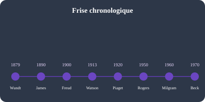

Introduction à la psychologie
Qu'est-ce que la psychologie ?
La psychologie est la science du comportement et des processus mentaux. Elle cherche à comprendre comment nous percevons, pensons, ressentons et agissons — individuellement et collectivement.

Les grandes écoles de pensée
🔬 Structuralisme (Wundt, 1879)
Première laboratory psychology à Leipzig. Analyse des éléments de base de la conscience par introspection.
🌊 Fonctionnalisme (James, 1890)
Étudie l'adaptation de l'esprit à l'environnement. Précurseur de la psychologie évolutionniste.
🛋️ Psychanalyse (Freud, 1900)
Inconscient, pulsions, transfert. Révolution conceptuelle malgré les critiques méthodologiques.
🐀 Behaviorisme (Watson, Skinner)
Seul le comportement observable compte. Conditionnement classique et opérant.
🧠 Cognitivisme (années 1960)
Retour à l'étude des processus mentaux : mémoire, attention, résolution de problèmes.
🌱 Humanisme (Rogers, Maslow)
Potentiel humain, croissance personnelle, thérapie centrée sur la personne.
Comment lire ce guide
Ce guide reprend la structure pédagogique des ouvrages Short Cuts Psychologie (8 thématiques + cartes mentales) et Le Petit Larousse de la Psychologie (dossiers + dictionnaire), avec un contenu original et des illustrations créées pour l'apprentissage.